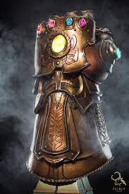

MANOPLA DO INFINITO:

A Manopla do Infinito foi projetada para armazenar seis das 'joias da alma ", mais conhecidas como as Joias do Infinito. Quando usadas em conjunto, seus poderes já impressionantes fazem com que o usuário seja capaz de fazer qualquer coisa que ele desejar. Foi reunida pelo Titã louco Thanos, enquanto ele tomava as joias dos Anciões do Universo que originalmente as carregavam. Adam Warlock mais tarde obteve a manopla, mas o Tribunal Vivo declarou que as jóias eram muito perigosas para serem usadas juntas. No entanto, planos posteriores de Thanos eventualmente levou ao Tribunal Vivo rescindir esta restrição.
Algum tempo depois, o Sr. Fantástico revelou a seus companheiros do secreto grupo chamado de Illuminati que ele estava coletando as Joias do Infinito, e esperava recolher todos elas com a ajuda deles. Apesar de uma apreensão geral, o grupo conseguiu adquirir todas as seis joias. Ao fazê-lo, o Sr. Fantástico tentou desejar as Joias fora da existência, mas ele foi incapaz de fazer isso. Diante desta falha, e repreendido por Uatu, o Vigia, ele tomou a decisão controversa de dar a cada membro do Illuminati uma joia para esconder, para que elas nunca fossem reunidas e usadas novamente.
Depois do Cerco de Asgard, O Capuz tentou conseguir todas as Joias, começando pela Joia da Realidade do Himalaia (que foi mantido lá pelo Illuminati Raio Negro), a Joia do Poder do Edifício Baxter (mantida pelo Sr. Fantástico) e lutou contra o Hulk Vurmelho usando ela.O Hulk Vermelho avisou os Vingadores a respeito disso, e o Homem de Ferro conversou com os Illuminati sobre isso. O Capuz conseguiu obter as Joias do Espaço e do Tempo, enquanto ele perdeu a Joia do Poder nas mãos do Hulk Vermelho, Namor e Thor. Depois de tomar a Joia da Mente das ruínas da Mansão X, Capuz viajou para o Plano Astral, onde ele tentou obter a Joia da Alma, mas foi finalmente derrotado pelos Vingadores. O Homem de Ferro reuniu todas as seis joias e tornou-se o primeiro ser humano a possuir e usar a Manopla do Infinito, e ele transportou o Capuz de volta à Ilha Ryker e fingiu ter feito a Manopla desaparecer da existência, quando ele na verdade a transportou para o local de reunião dos Illuminati, onde ele dividiu as gemas entre seus companheiros de equipe novamente.
Quando os Illuminati enfrentaram a ameaça das Incursões, Terras de realidades alternativas colidindo com a deles com o resultado da extinção de ambas as realidades, os Illuminati novamente reuniram a Manopla do Infinito. Galactus, O Vigia e Thanos sentiram a reunião da manopla, e o Capitão América usou a Manopla para empurrar a outra Terra e prevenir a colisão. O custo disso no entanto, foi a destruição da Manopla e de todas as Joias, com exceção da Joia do Tempo.